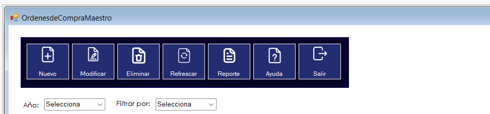
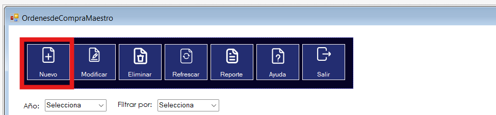
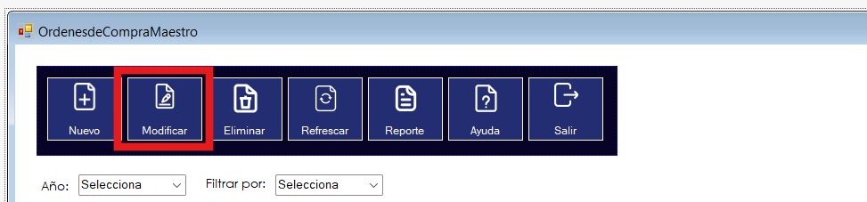
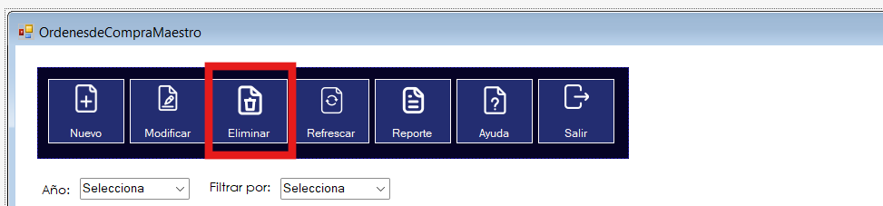
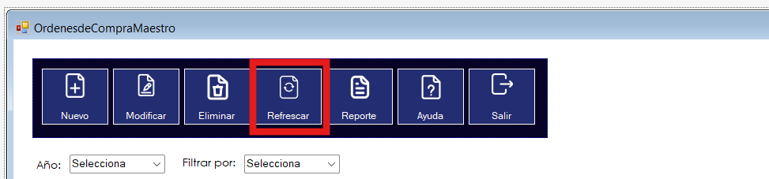
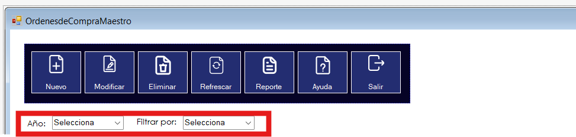
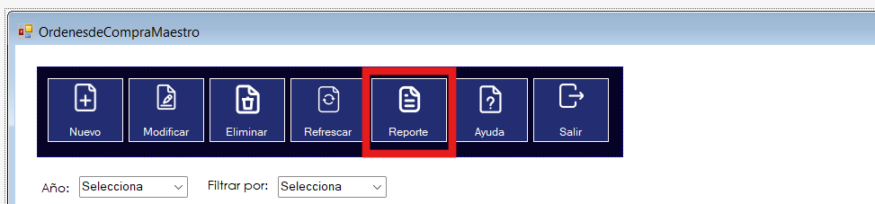
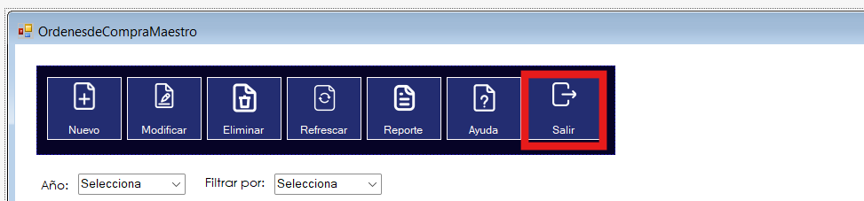

|
AYUDA DE ÓRDENES DE COMPRA |
|
|
AYUDA DE ÓRDENES DE COMPRA |
El menú general consta de siete botones y opciones para filtrar los datos con los que podemos realizar distintos procedimiento que explicaremos con detalle.
En este botón podremos agregar una nueva órden de compra, al darle clic se desplegará otro formulario en el que debemos ingresar los datos que se solicitan para poder añadir una órden de compra.
En este botón podremos modificar una órden de compra, primero lo que debemos hacer es darle clic a la fila del registro de nuestra tabla de datos que deseamos modificar. Al darle clic se desplegará otro formulario en el que debemos ingresar los nuevos datos que deseamos modificar, se pueden inclusive cambiar los productos al seleccionar el producto que queremos modificar en la tabla de datos que contiene los productos.
En este botón podremos eliminar una órden de compra, primero lo que debemos hacer es darle clic a la fila del registro de nuestra tabla de datos que deseamos eliminar. Al hacerlo nos aparecerá otro formulario en el que saldrán los datos de la órdenes que eliminaremos para estar seguros que es la órden correcta, si decidimos eliminarla únicamente hay que hacerle clic al único botón de eliminar órden.
En este botón podremos refrescar nuestra tabla de datos para tener los datos actualizados.
Con estas dos herramientas podemos filtrar los datos de nuestra tabla, primero debemos ingresar el año por el que se quiere filtrar y luego se debe seleccionar si queremos ver únicamente la información del día de hoy, la semanal o la mensual.
Al darle clic a este botón nos aparecerá un reporte con todas las órdenes de compra que existen actualmente, si queremos filtrar los reportes se puede hacer igualmente con las opciones de filtrado de datos. Si queremos el reporte semanal de las órdenes, debemos ingresar el año primero, luego en las opciones de la vista seleccionamos "Semanal". Luego de esto, le damos clic a reporte y nos filtrará la información semanalmente y así con los demás filtros.
Al darle clic a este botón se cerrará el formulario en el que estamos.
